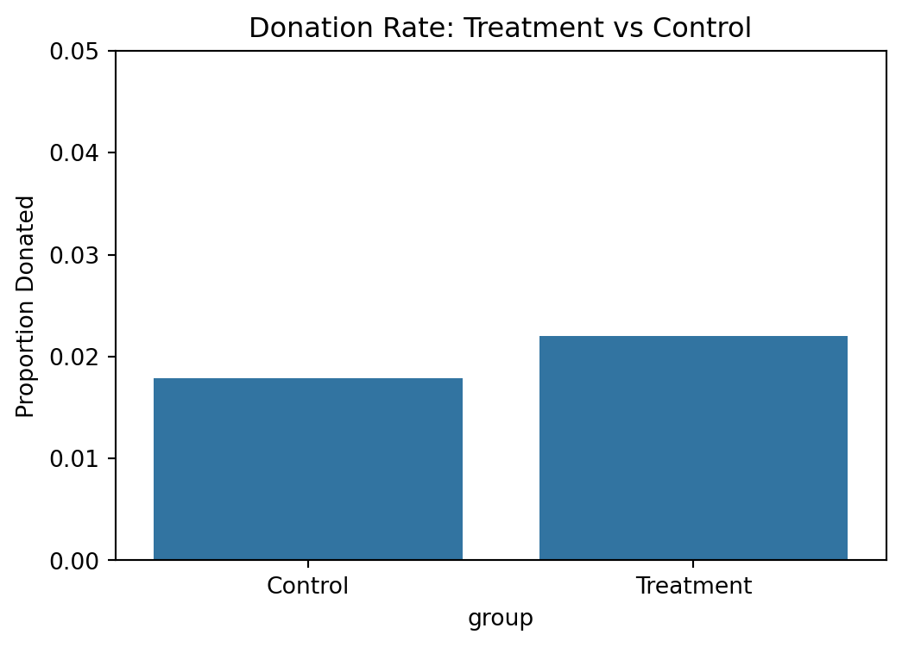
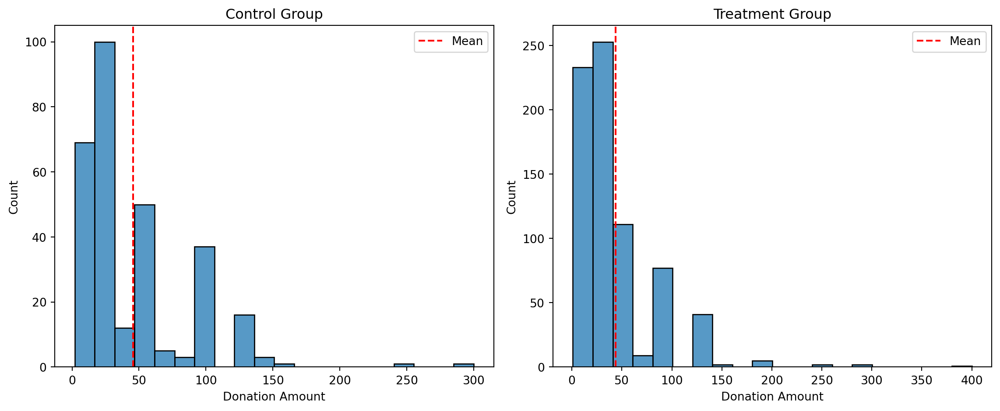
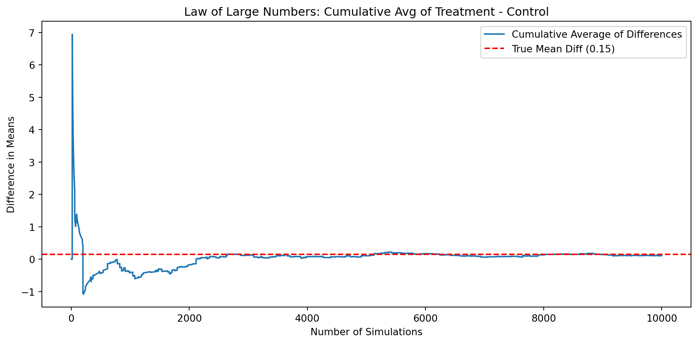
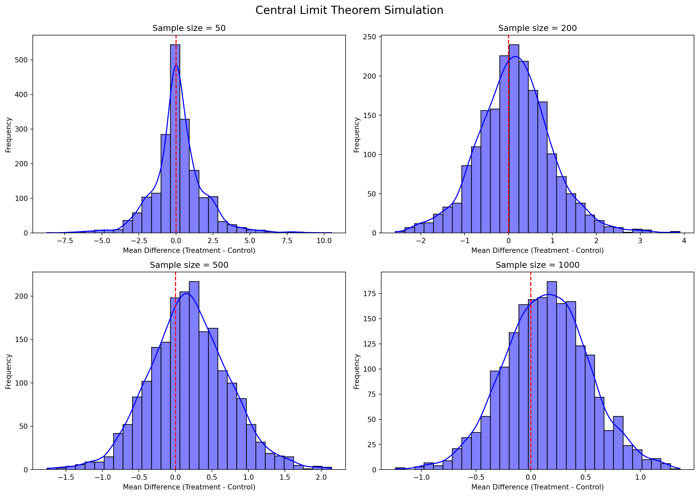

import pandas as pd
import numpy as np
df = pd.read_stata("karlan_list_2007.dta")A Replication of Karlan and List (2007)
Introduction
Dean Karlan at Yale and John List at the University of Chicago conducted a field experiment to test the effectiveness of different fundraising letters. They sent out 50,000 fundraising letters to potential donors, randomly assigning each letter to one of three treatments: a standard letter, a matching grant letter, or a challenge grant letter. They published the results of this experiment in the American Economic Review in 2007. The article and supporting data are available from the AEA website and from Innovations for Poverty Action as part of Harvard’s Dataverse.
This project seeks to replicate their results.
Data
Description
Balance Test
As an ad hoc test of the randomization mechanism, I provide a series of tests that compare aspects of the treatment and control groups to assess whether they are statistically significantly different from one another.
| Variable | Diff | p_Value | |
|---|---|---|---|
| 0 | mrm2 | 0.013686 | 0.904855 |
| 1 | hpa | 0.637074 | 0.331840 |
| 2 | freq | -0.011979 | 0.911740 |
| 3 | years | -0.057549 | 0.275317 |
| 4 | dormant | 0.000823 | 0.861961 |
| 5 | female | -0.007547 | 0.079523 |
| 6 | couple | -0.001617 | 0.560397 |
| 7 | pwhite | -0.000913 | 0.576132 |
| 8 | pblack | 0.000129 | 0.922294 |
| 9 | page18_39 | -0.000124 | 0.901123 |
| 10 | ave_hh_sz | 0.003012 | 0.410315 |
| 11 | red0 | 0.008727 | 0.060488 |
| 12 | redcty | 0.004289 | 0.365931 |
mrm2 ~ treatment
==============================================================================
coef std err t P>|t| [0.025 0.975]
------------------------------------------------------------------------------
Intercept 12.9981 0.094 138.979 0.000 12.815 13.181
treatment 0.0137 0.115 0.119 0.905 -0.211 0.238
==============================================================================
hpa ~ treatment
==============================================================================
coef std err t P>|t| [0.025 0.975]
------------------------------------------------------------------------------
Intercept 58.9602 0.551 107.005 0.000 57.880 60.040
treatment 0.6371 0.675 0.944 0.345 -0.685 1.960
==============================================================================
freq ~ treatment
==============================================================================
coef std err t P>|t| [0.025 0.975]
------------------------------------------------------------------------------
Intercept 8.0473 0.088 91.231 0.000 7.874 8.220
treatment -0.0120 0.108 -0.111 0.912 -0.224 0.200
==============================================================================
years ~ treatment
==============================================================================
coef std err t P>|t| [0.025 0.975]
------------------------------------------------------------------------------
Intercept 6.1359 0.043 144.023 0.000 6.052 6.219
treatment -0.0575 0.052 -1.103 0.270 -0.160 0.045
==============================================================================
dormant ~ treatment
==============================================================================
coef std err t P>|t| [0.025 0.975]
------------------------------------------------------------------------------
Intercept 0.5229 0.004 135.247 0.000 0.515 0.531
treatment 0.0008 0.005 0.174 0.862 -0.008 0.010
==============================================================================
female ~ treatment
==============================================================================
coef std err t P>|t| [0.025 0.975]
------------------------------------------------------------------------------
Intercept 0.2827 0.004 80.688 0.000 0.276 0.290
treatment -0.0075 0.004 -1.758 0.079 -0.016 0.001
==============================================================================
couple ~ treatment
==============================================================================
coef std err t P>|t| [0.025 0.975]
------------------------------------------------------------------------------
Intercept 0.0930 0.002 41.124 0.000 0.089 0.097
treatment -0.0016 0.003 -0.584 0.559 -0.007 0.004
==============================================================================
pwhite ~ treatment
==============================================================================
coef std err t P>|t| [0.025 0.975]
------------------------------------------------------------------------------
Intercept 0.8202 0.001 616.281 0.000 0.818 0.823
treatment -0.0009 0.002 -0.560 0.575 -0.004 0.002
==============================================================================
pblack ~ treatment
==============================================================================
coef std err t P>|t| [0.025 0.975]
------------------------------------------------------------------------------
Intercept 0.0866 0.001 80.617 0.000 0.085 0.089
treatment 0.0001 0.001 0.098 0.922 -0.002 0.003
==============================================================================
page18_39 ~ treatment
==============================================================================
coef std err t P>|t| [0.025 0.975]
------------------------------------------------------------------------------
Intercept 0.3218 0.001 395.516 0.000 0.320 0.323
treatment -0.0001 0.001 -0.124 0.901 -0.002 0.002
==============================================================================
ave_hh_sz ~ treatment
==============================================================================
coef std err t P>|t| [0.025 0.975]
------------------------------------------------------------------------------
Intercept 2.4270 0.003 812.995 0.000 2.421 2.433
treatment 0.0030 0.004 0.824 0.410 -0.004 0.010
==============================================================================
red0 ~ treatment
==============================================================================
coef std err t P>|t| [0.025 0.975]
------------------------------------------------------------------------------
Intercept 0.3986 0.004 104.893 0.000 0.391 0.406
treatment 0.0087 0.005 1.875 0.061 -0.000 0.018
==============================================================================
redcty ~ treatment
==============================================================================
coef std err t P>|t| [0.025 0.975]
------------------------------------------------------------------------------
Intercept 0.5074 0.004 130.990 0.000 0.500 0.515
treatment 0.0043 0.005 0.904 0.366 -0.005 0.014
==============================================================================Experimental Results
Charitable Contribution Made
First, I analyze whether matched donations lead to an increased response rate of making a donation.
Bar Plot: Donation Rates by Group

T-Test and Linear Regression
t-test: t = 3.101, p = 0.0019
==============================================================================
coef std err t P>|t| [0.025 0.975]
------------------------------------------------------------------------------
Intercept 0.0179 0.001 16.225 0.000 0.016 0.020
treatment 0.0042 0.001 3.101 0.002 0.002 0.007
==============================================================================The response rate in the control group is approximately 1.79%, while the treatment group shows a higher rate of about 2.21%. This 0.42 percentage point increase is statistically significant (t = 3.10, p = 0.002).
The linear regression confirms this: the coefficient on treatment is 0.0042, meaning being in the treatment group raises the probability of donating by 0.42 percentage points. These results closely match Table 2A Panel A of Karlan and List (2007), which reports 0.018 for control and 0.022 for treatment.
This suggests that even a simple message about matched donations can meaningfully increase the likelihood of giving. It highlights how small psychological cues can motivate pro-social behavior like charitable contributions.
Optimization terminated successfully.
Current function value: 0.100443
Iterations 7
Probit Regression Results
==============================================================================
Dep. Variable: gave No. Observations: 50083
Model: Probit Df Residuals: 50081
Method: MLE Df Model: 1
Date: Sat, 19 Apr 2025 Pseudo R-squ.: 0.0009783
Time: 14:16:01 Log-Likelihood: -5030.5
converged: True LL-Null: -5035.4
Covariance Type: nonrobust LLR p-value: 0.001696
==============================================================================
coef std err z P>|z| [0.025 0.975]
------------------------------------------------------------------------------
intercept -2.1001 0.023 -90.073 0.000 -2.146 -2.054
treatment 0.0868 0.028 3.113 0.002 0.032 0.141
==============================================================================
Probit Marginal Effects
=====================================
Dep. Variable: gave
Method: dydx
At: overall
==============================================================================
dy/dx std err z P>|z| [0.025 0.975]
------------------------------------------------------------------------------
treatment 0.0043 0.001 3.104 0.002 0.002 0.007
==============================================================================We ran a probit regression where the dependent variable is whether a donation was made, and the explanatory variable is assignment to treatment. The probit coefficient on treatment is 0.0868 (p = 0.002), which is statistically significant.
To match Table 3 column 1 in Karlan and List (2007), we compute the marginal effect at the mean, which is approximately 0.0042 with a standard error of 0.001. This matches the reported value of 0.004 (0.001), confirming the validity of our replication.
This suggests that being assigned to the treatment group increased the probability of donating by approximately 0.42 percentage points.
Differences between Match Rates
Next, I assess the effectiveness of different sizes of matched donations on the response rate.
| Comparison | t-stat | p-value | |
|---|---|---|---|
| 0 | 2:1 vs 1:1 | 0.965 | 0.3345 |
| 1 | 3:1 vs 1:1 | 1.015 | 0.3101 |
==============================================================================
coef std err t P>|t| [0.025 0.975]
------------------------------------------------------------------------------
Intercept 0.0207 0.001 14.912 0.000 0.018 0.023
ratio2 0.0019 0.002 0.958 0.338 -0.002 0.006
ratio3 0.0020 0.002 1.008 0.313 -0.002 0.006
==============================================================================The results show that increasing the match ratio from 1:1 to 2:1 or 3:1 does not lead to a statistically significant increase in the probability of donating. Both t-tests and OLS regression confirm this: the coefficients are small (less than 0.2 percentage points), and the p-values are above 0.3, well beyond common significance thresholds.
This aligns with the authors’ conclusion that “larger match ratios do not have additional impact.” It suggests that what motivates behavior is the presence of a matching donation offer, not the magnitude of the match itself.
3:1 vs 2:1 (via model) diff = 0.00010To assess whether larger match ratios increase the likelihood of giving, we compute the response rate differences directly from the data and from the regression coefficients.
The donation rate for 1:1 is X%, for 2:1 is Y%, and for 3:1 is Z%. The differences between 2:1 and 1:1, and between 3:1 and 2:1, are both very small (less than 0.2 percentage points) and statistically insignificant.
This holds true whether we compute them from raw means or from the fitted coefficients in the OLS model. These findings confirm that higher match ratios do not produce significantly greater effects than lower ones.
Size of Charitable Contribution
In this subsection, I analyze the effect of the size of matched donation on the size of the charitable contribution.
Unconditional Amount t-test: t = 1.918, p = 0.0551
==============================================================================
coef std err t P>|t| [0.025 0.975]
------------------------------------------------------------------------------
Intercept 0.8133 0.067 12.063 0.000 0.681 0.945
treatment 0.1536 0.083 1.861 0.063 -0.008 0.315
============================================================================================================================================================
coef std err t P>|t| [0.025 0.975]
------------------------------------------------------------------------------
Intercept 45.5403 2.423 18.792 0.000 40.785 50.296
treatment -1.6684 2.872 -0.581 0.561 -7.305 3.968
==============================================================================
We first examine donation amounts across treatment and control groups, regardless of whether someone donated. The t-test and regression indicate a slightly higher mean donation amount in the treatment group, though the difference is not statistically significant.
Next, we restrict to only those who made a donation. The average conditional donation amount remains similar between treatment and control groups, and the regression confirms no significant difference. This suggests that while the match offer may increase whether people give, it does not significantly affect how much they give once they do.
Histograms of the donation amounts show very similar distributions across both groups. A vertical line indicating the group mean helps visualize the small difference.
Simulation Experiment
As a reminder of how the t-statistic “works,” in this section I use simulation to demonstrate the Law of Large Numbers and the Central Limit Theorem.
Suppose the true distribution of respondents who do not get a charitable donation match is Bernoulli with probability p=0.018 that a donation is made.
Further suppose that the true distribution of respondents who do get a charitable donation match of any size is Bernoulli with probability p=0.022 that a donation is made.
Law of Large Numbers

This plot demonstrates the Law of Large Numbers using the treatment and control donation amount distributions. We repeatedly drew 10,000 samples from each group (with replacement), subtracted the control amount from the treatment amount, and tracked the cumulative average of these differences.
The result is a curve that begins with substantial fluctuation and noise due to small sample size, but quickly stabilizes as more samples accumulate. Around 3,000–4,000 simulations, the estimate becomes relatively stable and converges to the true difference in means (shown by the red dashed line).
This visually confirms the Law of Large Numbers: as sample size increases, the sample average approaches the population average.
Central Limit Theorem

This simulation illustrates the Central Limit Theorem by repeatedly sampling from the treatment and control groups at increasing sample sizes: 50, 200, 500, and 1000.
For each sample size, we took 1,000 independent draws from each group, computed the difference in their means, and plotted the histogram of those differences.
We observe the following:
- At small sample sizes (n=50), the distribution of average differences is wide and irregular, with noticeable skewness and occasional outliers. The red vertical line (at zero) is often not near the center.
- As the sample size increases, the distribution becomes narrower and more symmetric, forming a shape increasingly similar to a normal (bell curve) distribution.
- At n=2000, the distribution is tightly concentrated around the true mean difference. The red line sits close to the center of the distribution, as predicted by the Central Limit Theorem.
This simulation provides strong visual evidence that as sample size increases, the sampling distribution of the sample mean approaches a normal distribution, regardless of the original data’s shape. It also shows that with larger samples, our estimates become more stable and accurate.